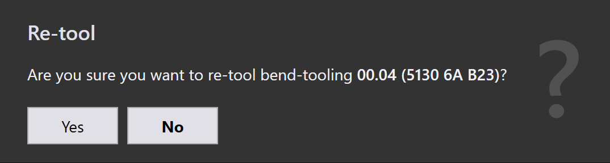

Werkzeugpanel
Dieser Abschnitt erläutert werkzeugbezogene Aktionen wie Ausgänge exportieren, Check Tooling, Werkzeuge unterdrücken, Als Base Flat festlegen…, Werkzeugbestückung kopieren… und andere Optionen, die zur Verwaltung von Werkzeuginstanzen verwendet werden.

|
|


Ausgänge exportieren
Diese Option exportiert die Teileausgabe zum in den Werkseinstellungen konfigurierten Ziel. (Siehe Biegeeinstellungen und Schneideinstellungen)

Nur die mit der ausgewählten Werkzeugoperation verbundenen Werkzeugbestückungen werden exportiert, nicht das gesamte Teil.
| Die exportierten Dateien hängen vom Operationstyp ab. Für Biege- und Falzvorgänge werden NC-Dateien und Berichte generiert. Für Schneid- und Stanzvorgänge werden nur die Teiledateien exportiert. |
Check Tooling
-
Wenn es eine Änderung in den CAM-Einstellungen gibt oder ein Biegewerkzeug verloren geht, müssen Sie das Teil nicht neu bestücken.
-
Verwenden Sie stattdessen "Check Tooling", um die vorhandene Werkzeugbestückung zu validieren, ohne Änderungen vorzunehmen.
-
Wenn die Validierung fehlschlägt, wird der Werkzeugstatus dieser Instanz aktualisiert und die zugehörigen Ausgabedateien werden entfernt.
-
"Check Tooling" erkennt auch Teile, bei denen Fehler zuvor manuell mit Fehler ignorieren überschrieben wurden, und aktualisiert ihren Status bei Bedarf auf "Fehler".

Werkzeugbestückung kopieren…
Das Kopieren von Werkzeugbestückungen ermöglicht es Ihnen, Biegewerkzeugbestückungen von einer Lösung schnell auf andere anzuwenden und spart Zeit und Mühe.
Dies kopiert die Stanz-, Sequenz- und Hinteranschlagseinrichtung von einer ausgewählten Referenzwerkzeugbestückung (Lösung) und versucht, dieselben Einstellungen auf alle anderen Lösungen anzuwenden.
-
Wenn die kopierte Einrichtung für eine Zielmaschine machbar ist, wird sie gespeichert und verwendet.
-
Wenn die Einrichtung nicht machbar ist, bleibt die ursprüngliche Werkzeugbestückung für diese Maschine unverändert.
Sie haben beispielsweise möglicherweise unterschiedliche Werkzeugbestückungen für verschiedene Maschinen:
-
Hier verwendet Maschine 5230SX 6A einen Schwanenhals-Stempel, Maschine 5085X 6A B23 verwendet einen spitzen Stempel.

Wenn Sie Werkzeugbestückung kopieren… auf Maschine 5230SX 6A verwenden, wird versucht, die Schwanenhals-Einrichtung auf alle anderen Maschinen zu kopieren.

Dieselben Stanz-, Sequenz- und Hinteranschlagseinstellungen werden überall angewendet, wo möglich. Wenn die kopierte Einrichtung nicht verwendet werden kann, bleibt die ursprüngliche Werkzeugbestückung unverändert.

Nach dem Anwenden des Kopierens der Werkzeugbestückung wurde die Schwanenhals-Einrichtung erfolgreich auf alle anderen Maschinen angewendet, wo sie machbar ist.
Als Base Flat festlegen…
Die Funktion Als Base Flat festlegen… definiert, welche Biege- oder Falzwerkzeugbestückung als Referenz-Flachgröße für die Generierung von Schneidlösungen verwendet wird. Wenn eine Werkzeugbestückung als Base-Flat markiert ist, aktualisiert TruSmartCAM die Flachgröße des Teils basierend auf dieser Maschine und regeneriert die Schneidlösungen entsprechend. Base-Flat-Werkzeugbestückungen werden in der Benutzeroberfläche mit einem blauen Rand angezeigt.
Verschiedene Biegemaschinen können für dasselbe Teil leichte Variationen in der Flachgröße erzeugen. Wenn Sie eine Werkzeugbestückung als Base-Flat festlegen, verwendet TruSmartCAM die Flachgröße dieser Maschine als Hauptreferenz und berechnet automatisch die Schneidlösungen neu.
Hier können wir verschiedene Flachgrößen für dasselbe Teil über verschiedene Maschinen hinweg sehen:

In diesem Beispiel ist die Werkzeugbestückung 5130X 6A B23 als Base-Flat festgelegt, und die aktualisierte Flachgröße wird in den Teileeigenschaften angewendet:

Automatische Base-Flat-Auswahl
Wenn die Fabrikeinstellung Flachkorrektur beim Biegen anwenden aktiviert ist:

-
TruSmartCAM legt automatisch die Biegewerkzeugbestückung (die die maximale Biegelängentabelle enthält) als Base-Flat während des Teileimports fest.
-
Wenn die ausgewählte Biegewerkzeugbestückung einen Fehler aufweist oder nicht machbar ist, wechselt TruSmartCAM intelligent und legt eine andere gültige Biegewerkzeugbestückung als Base-Flat fest. Dies stellt sicher, dass die Flachgrößenreferenz und die Schneidlösungen ohne manuelle Eingriffe immer konsistent und gültig bleiben.
Erweiterte Base-Flat-Verwaltung
TruSmartCAM bietet Base-Flat-Optionen im Dialog In Praxis speichern beim Speichern von Biege- oder Falzwerkzeugbearbeitungen. Diese Optionen erscheinen nur für Werkzeugbestückungen im OK-Status und stellen sicher, dass Flachgröße und Schneidlösungen genau bleiben.
Als Base Flat festlegen und Schneidlösung berechnen
Diese Option wird verwendet, um eine Werkzeugbestückung zum ersten Mal als Base-Flat zu markieren und automatisch die entsprechende Schneidlösung zu generieren.
Erscheint, wenn:
-
Die Werkzeugbestückung derzeit nicht als Base-Flat markiert ist.
-
Der Benutzer die Werkzeugbestückung zur Bearbeitung ausgecheckt hat und die Änderungen speichert.

Um diese Option zu verwenden, checken Sie die Biege- oder Falzwerkzeugbestückung aus und nehmen Sie die erforderlichen Änderungen vor, wie z. B. Änderungen an Biegeparametern oder Flachgröße. Drücken Sie Ctrl+S, um die Änderungen zu speichern. Wählen Sie im Dialog In Praxis speichern die Option Als Base Flat festlegen und Schneidlösung berechnen und klicken Sie auf OK. TruSmartCAM legt die Werkzeugbestückung als Base-Flat fest und generiert die Schneidlösung unter Verwendung der aktualisierten Flachgröße.
Base Flat aktualisieren und Schneidlösung neu berechnen
Diese Option wird verwendet, wenn die Werkzeugbestückung bereits als Base-Flat markiert ist und bearbeitet wurde, wodurch Flachgröße und Schneidlösungen regeneriert werden müssen.
Erscheint, wenn:
-
Die Werkzeugbestückung bereits als Base-Flat markiert ist.
-
Der Benutzer sie ausgecheckt, bearbeitet und die Änderungen speichert.

Beim Bearbeiten der vorhandenen Base-Flat-Werkzeugbestückung aktualisieren Sie die Biegeparameter oder Flachgrößengeometrie nach Bedarf. Wählen Sie im Dialog In Praxis speichern die Option Base Flat aktualisieren und Schneidlösung neu berechnen. TruSmartCAM aktualisiert dann die Base-Flat-Werkzeugbestückung und regeneriert alle zugehörigen Schneidlösungen, um die neuesten Änderungen widerzuspiegeln.
|
Es kann jeweils nur eine Biegewerkzeugbestückung als Base-Flat festgelegt werden. Wenn das Base-Flat geändert wird, werden vorhandene Schneidlösungen automatisch neu verarbeitet. Diese Funktion ist sowohl für Biege- als auch für Falzwerkzeugbestückungen in TruSmartCAM verfügbar. |
Neu rüsten…
Diese Option verarbeitet die ausgewählte Werkzeugbestückung für das Teil erneut.
Klicken Sie mit der rechten Maustaste auf die gewünschte Werkzeugbestückung im Werkzeugpanel und klicken Sie auf Neu rüsten…

Vor dem Fortfahren wird ein Bestätigungsdialog angezeigt.

Klicken Sie auf Ja, um mit der Neubestückung fortzufahren, oder auf Nein, um den Vorgang abzubrechen.
Nur die ausgewählte Werkzeugbestückung wird neu bestückt. Andere mit dem Teil verbundene Werkzeugbestückungen sind nicht betroffen. Die vorhandenen Ausgaben, die sich auf die ausgewählte Werkzeugbestückung beziehen, werden entfernt und während des Neubestückungsprozesses regeneriert.
Verwenden Sie diese Option, wenn Werkzeugdaten veraltet oder fehlerhaft sind oder wenn Änderungen an Maschinen- oder Werkzeugkonfigurationen vorgenommen werden.
Fehler ignorieren
-
Wenn eine bestückte Instanz eine Warnung anzeigt und Sie dennoch damit fortfahren möchten, können Sie die Warnung überschreiben, indem Sie auf Fehler ignorieren klicken.

-
Dadurch kann das System Ausgabedateien für diese Instanz exportieren, auch wenn Werkzeugprobleme vorlagen.
| Verwenden Sie Ignore Errors nur, wenn Sie sicher sind, dass die Warnung sicher ignoriert werden kann. Das Überschreiben tatsächlicher Fehler kann zu Maschinenschäden oder Sicherheitsrisiken führen. |
Werkzeugbestückung unterdrücken/Unterdrückung aufheben
-
Wenn eine Maschine inaktiv ist oder Sie nicht möchten, dass ein bestimmtes Teil von einer bestimmten Maschine verarbeitet wird, verwenden Sie Werkzeuge unterdrücken, um dieses Teil von der Verschachtelung auf dieser Maschine auszuschließen. particular machine, use Werkzeuge unterdrücken to exclude that part from nesting on that machine.

-
Nach der Unterdrückung zeigt das Bewegen der Maus über die bestückte Instanz eine Meldung wie: "Tooling suppressed by <User name> on <Date Time>".
-
Das Unterdrücken der Werkzeugbestückung entfernt die Ausgabedatei für diese Maschine und dieses Teil.
-
Verwenden Sie Unterdrückung der Werkzeuge aufheben, um den Werkzeugstatus für das Teil auf dieser Maschine wiederherzustellen.

-
Wenn die Unterdrückung aufgehoben wird, wird die entsprechende Ausgabedatei wieder generiert.